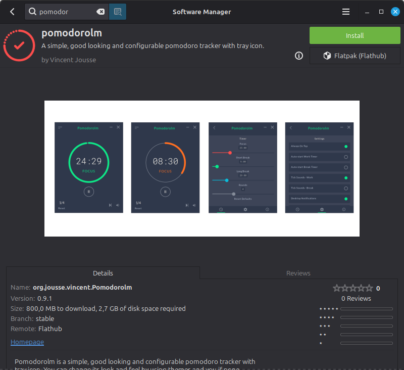
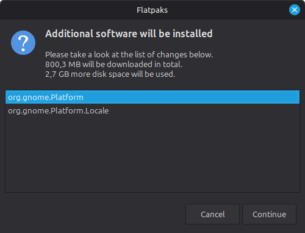
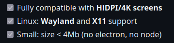
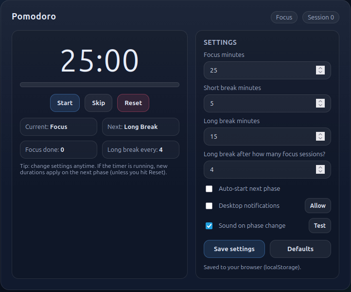

Anđelković, Miloš



4Mb = 500 KB

tiny_pomodoroFirst implementation — full GUI with FLTK
Fast Light Toolkit — C++ GUI library
Fl::run()Fl::add_timeout()tiny_pomodoro — app struct
#include <FL/Fl.H>
#include <FL/Fl_Box.H>
#include <FL/Fl_Button.H>
#include <FL/Fl_Int_Input.H>
#include <FL/Fl_Window.H>
#include <alsa/asoundlib.h>
namespace {
enum class Session { Focus, ShortBreak, LongBreak };
struct PomodoroApp {
Fl_Window* window = nullptr;
Fl_Box* session_label = nullptr;
Fl_Box* timer_label = nullptr;
Fl_Button* start_stop_btn = nullptr;
Fl_Int_Input* focus_input = nullptr;
Fl_Int_Input* short_input = nullptr;
Fl_Int_Input* long_input = nullptr;
bool running = false;
int seconds_left = 0;
int pomodoro_count = 0;
Session current = Session::Focus;
};
PomodoroApp app;
} // namespace
tiny_pomodoro — widgets
int main() {
// Stack-allocate: ~Fl_Window cascades to delete the child widgets.
Fl_Window window(320, 420, "Tiny Pomodoro");
app.window = &window;
app.window->color(FL_WHITE);
app.session_label = new Fl_Box(0, 18, 320, 28, "Focus");
app.session_label->labelsize(15);
app.session_label->labelfont(FL_BOLD);
app.timer_label = new Fl_Box(0, 54, 320, 90, "25:00");
app.timer_label->labelsize(60);
app.timer_label->labelfont(FL_BOLD);
auto* btn_focus = new Fl_Button( 14, 158, 88, 28, "Focus");
auto* btn_short = new Fl_Button(116, 158, 88, 28, "Short Break");
auto* btn_long = new Fl_Button(218, 158, 88, 28, "Long Break");
btn_focus->callback(session_cb, &s_focus);
btn_short->callback(session_cb, &s_short);
btn_long ->callback(session_cb, &s_long);
app.start_stop_btn = new Fl_Button(110, 202, 100, 36, "Start");
app.start_stop_btn->callback(start_stop_cb);
app.focus_input = new Fl_Int_Input(138, 288, 60, 24); app.focus_input->value("25");
app.short_input = new Fl_Int_Input(138, 322, 60, 24); app.short_input->value("5");
app.long_input = new Fl_Int_Input(138, 356, 60, 24); app.long_input->value("15");
app.window->end();
app.window->show();
return Fl::run(); // children freed via window's dtor on return
}
tiny_pomodoro — timer callback
void tick_cb(void*) {
if (!app.running) return;
if (app.seconds_left > 0) {
--app.seconds_left;
update_timer_label();
Fl::add_timeout(1.0, tick_cb); // re-arm every second
return;
}
stop_timer();
play_wav(SOUND_PATH);
if (app.current == Session::Focus) {
++app.pomodoro_count;
reset_session(app.pomodoro_count % kLongBreakEvery == 0
? Session::LongBreak
: Session::ShortBreak);
} else {
reset_session(Session::Focus);
}
app.running = true;
Fl::add_timeout(1.0, tick_cb); // auto-start next session
}
tiny_pomodoro — build sizes| Build | File size | Disk usage |
|---|---|---|
| debug | 1.2 MB | 1.2 MB |
| debugasan | 4.1 MB | 4.1 MB |
| debugubsan | 1.6 MB | 1.7 MB |
| release | 1.1 MB | 1.1 MB |
-Oz — max size optimization (clang)-ffunction-sections — one ELF section per function-fdata-sections — one ELF section per data object-fno-rtti — remove type-info tables-fno-exceptions — remove exception handling-flto=thin — cross-TU dead code elimination-fvisibility=hidden — no exported symbols by default-fno-unwind-tables — remove .eh_frame section-fno-asynchronous-unwind-tables — no async unwind metadata
-fmerge-all-constants — deduplicate identical constants-fuse-ld=lld — use LLVM LLD linker-Wl,--gc-sections — discard unreferenced sections-Wl,--icf=all — identical code folding-Wl,-s — strip symbol table-Wl,--as-needed — drop unused library referencestiny_pomodoro — tiny vs benchmark| File size | |
|---|---|
| debug | 1.2 MB |
| release | 1.1 MB |
| tiny | 831 KB |
| ChatGPT HTML/JS | 20 KB |
Still 40× larger than the benchmark
tiny_pomodoro_proRemove FLTK — use raw Xlib
The layer FLTK sits on top of
XNextEvent()tiny_pomodoro_pro — shared Timer (timer.hpp)
namespace pomodoro {
class Timer {
public:
enum class State { Stopped, Running, Paused };
explicit Timer(int seconds = kDefaultFocusMin * 60) noexcept
: initial_(seconds), remaining_(seconds) {}
~Timer() {
stop_flag_ = true;
if (worker_.joinable()) worker_.join();
}
void start() {
if (state_ == State::Running) return;
state_ = State::Running;
if (!worker_.joinable())
worker_ = std::thread(&Timer::run, this);
}
void pause() noexcept { state_ = State::Paused; }
void reset() noexcept { remaining_ = initial_; state_ = State::Stopped; }
private:
void run() noexcept {
using namespace std::chrono_literals;
while (!stop_flag_) {
if (state_ != State::Running) { std::this_thread::sleep_for(100ms); continue; }
std::this_thread::sleep_for(1s);
if (state_ != State::Running) continue;
if (remaining_ > 0 && --remaining_ == 0)
state_ = State::Stopped;
}
}
int initial_, remaining_;
State state_{State::Stopped};
bool stop_flag_{false};
std::thread worker_;
};
} // namespace pomodoro
tiny_pomodoro_pro — window & fonts
Display* dpy = XOpenDisplay(nullptr);
int screen = DefaultScreen(dpy);
unsigned long black = BlackPixel(dpy, screen);
unsigned long white = WhitePixel(dpy, screen);
Window win = XCreateSimpleWindow(
dpy, RootWindow(dpy, screen),
100, 100, 360, 210, 1, black, white);
XSelectInput(dpy, win,
ExposureMask | KeyPressMask |
ButtonPressMask | StructureNotifyMask);
Atom wmDelete = XInternAtom(dpy, "WM_DELETE_WINDOW", False);
XSetWMProtocols(dpy, win, &wmDelete, 1);
XMapWindow(dpy, win);
GC gc = XCreateGC(dpy, win, 0, nullptr);
XFontStruct* font_big = XLoadQueryFont(dpy,
"-*-helvetica-bold-r-*-*-24-*-*-*-*-*-*-*");
if (!font_big) font_big = XLoadQueryFont(dpy, "fixed");
XColor xcol{};
XAllocNamedColor(dpy, DefaultColormap(dpy, screen),
"gray85", &xcol, &xcol);
tiny_pomodoro_pro — drawing
auto draw_centered = [&](XFontStruct* fnt, int bx, int by,
unsigned int bw, unsigned int bh,
std::string_view text) {
if (!fnt || text.empty()) return;
const int len = static_cast<int>(text.size());
const int tw = XTextWidth(fnt, text.data(), len);
const int tx = bx + (static_cast<int>(bw) - tw) / 2;
const int ty = by + static_cast<int>(bh) / 2
+ (fnt->ascent - fnt->descent) / 2;
XSetFont(dpy, gc, fnt->fid);
XDrawString(dpy, win, gc, tx, ty, text.data(), len);
};
auto draw = [&](int secs) {
XClearWindow(dpy, win);
XSetForeground(dpy, gc, black);
draw_centered(font_small, 0, 6, kWinW, 20, name_of(session));
draw_centered(font_big, 0, 30, kWinW, 52, format_time(secs));
XDrawLine(dpy, win, gc, 10, 90, static_cast<int>(kWinW) - 10, 90);
auto draw_btn = [&](const Button& b) {
XSetForeground(dpy, gc, gray);
XFillRectangle(dpy, win, gc, b.x, b.y, b.w, b.h);
XSetForeground(dpy, gc, black);
XDrawRectangle(dpy, win, gc, b.x, b.y, b.w, b.h);
draw_centered(font_small, b.x, b.y, b.w, b.h, b.label);
};
draw_btn(focus_minus); draw_btn(focus_plus);
draw_btn(btn_start); draw_btn(btn_reset);
};
tiny_pomodoro_pro — build sizes| Build | File size | Disk usage |
|---|---|---|
| debug | 284 KB | 284 KB |
| debugasan | 3.2 MB | 3.2 MB |
| debugubsan | 781 KB | 784 KB |
| release | 33.4 KB | 36 KB |
| tiny | 15.9 KB | 16 KB |
16 KB — beats the 20 KB benchmark
tiny_pomodoro_pro_plusNo X11, no ALSA — terminal only
\a for audiotiny_pomodoro_pro_plus — raw terminal
namespace {
termios g_orig_termios{};
void restore_terminal() noexcept {
tcsetattr(STDIN_FILENO, TCSANOW, &g_orig_termios);
std::fputs("\033[?25h\033[0m\n", stdout);
std::fflush(stdout);
}
void setup_raw_terminal() {
tcgetattr(STDIN_FILENO, &g_orig_termios);
std::atexit(restore_terminal);
termios raw = g_orig_termios;
raw.c_lflag &= ~static_cast<tcflag_t>(ICANON | ECHO);
raw.c_cc[VMIN] = 0;
raw.c_cc[VTIME] = 0; // non-blocking read
tcsetattr(STDIN_FILENO, TCSANOW, &raw);
std::fputs("\033[?25l", stdout); // hide cursor
}
} // namespace
tiny_pomodoro_pro_plus — render
void render(const Timer& t, Session sess, int pomodoros,
int focus_min, int short_min, int long_min) {
std::fputs("\033[H", stdout); // home cursor — no clear, no flicker
std::fputs("\033[1m┌─────────────────────────────────┐\033[0m\n", stdout);
const auto name = name_of(sess);
std::printf("\033[1m│ %-20.*s #%-3d │\033[0m\n",
static_cast<int>(name.size()), name.data(), pomodoros);
const int secs = t.seconds_left();
std::printf("\033[1m│ \033[32m%02d:%02d\033[0m\033[1m"
" │\033[0m\n", secs / 60, secs % 60);
const char* dot = t.is_running() ? "\033[32m●\033[0m\033[1m"
: "\033[33m■\033[0m\033[1m";
const char* status = t.is_running() ? "Running" : "Paused ";
std::printf("\033[1m│ %s %s │\033[0m\n", dot, status);
std::fputs("\033[1m├─────────────────────────────────┤\033[0m\n", stdout);
std::printf("\033[1m│ Focus \033[0m%-3d\033[1m Short \033[0m%-3d"
"\033[1m Long \033[0m%-3d\033[1m │\033[0m\n",
focus_min, short_min, long_min);
std::fputs("\033[1m└─────────────────────────────────┘\033[0m\n", stdout);
std::fflush(stdout);
}
tiny_pomodoro_pro_plus — main loop
while (true) {
char c = 0;
if (read(STDIN_FILENO, &c, 1) == 1) {
switch (c) {
case 's': case 'S':
if (timer.is_running()) timer.pause(); else timer.start();
break;
case 'r': case 'R': timer.reset(); break;
case 'f': focus_min = std::max(1, focus_min - 1); break;
case 'F': focus_min = std::min(240, focus_min + 1); break;
case 'b': short_min = std::max(1, short_min - 1); break;
case 'B': short_min = std::min(120, short_min + 1); break;
case 'l': long_min = std::max(1, long_min - 1); break;
case 'L': long_min = std::min(240, long_min + 1); break;
case 'q': case 'Q': case '\x1b': restore_terminal(); return 0;
}
}
if (was_running && !timer.is_running() && timer.seconds_left() == 0)
advance_session();
was_running = timer.is_running();
render(timer, session, pomodoro_count, focus_min, short_min, long_min);
std::this_thread::sleep_for(std::chrono::milliseconds(200));
}
tiny_pomodoro_pro_plus — build sizes| Build | File size | Disk usage |
|---|---|---|
| debug | 137 KB | 140 KB |
| debugasan | 3.1 MB | 3.1 MB |
| debugubsan | 579 KB | 580 KB |
| release | 18.5 KB | 20 KB |
| tiny | 9.7 KB | 12 KB |
9.7 KB — under half the benchmark
tiny_pomodoro_pro_plus_ultraPure x86-64 NASM — no libc, no runtime
ld -nostdlib -static -sclone() syscall for timer threadtiny_pomodoro_pro_plus_ultra — syscalls & state
%define SYS_read 0
%define SYS_write 1
%define SYS_exit 60
%define SYS_nanosleep 35
%define SYS_clone 56
%define SYS_ioctl 16
%define THREAD_FLAGS (CLONE_VM|CLONE_FS|CLONE_FILES|CLONE_SIGHAND|CLONE_THREAD|CLONE_SYSVSEM)
section .bss
orig_termios: resb 60 ; struct termios on Linux x86-64
g_state: resd 1 ; STATE_STOPPED / RUNNING / PAUSED
g_remaining: resd 1 ; seconds left
g_initial: resd 1 ; session total seconds
g_session: resd 1 ; 0=Focus 1=Short 2=Long
g_pomodoros: resd 1
g_focus_min: resd 1
g_short_min: resd 1
g_long_min: resd 1
itoa_buf: resb 16 ; scratch for number formatting
thread_stack: resb (1024*1024) ; 1 MiB thread stack
tiny_pomodoro_pro_plus_ultra — countdown thread
countdown_thread:
.loop:
cmp dword [rel g_stop_thread], 1
je .exit
cmp dword [rel g_state], STATE_RUNNING
jne .sleep_short
lea rdi, [rel ts_1s] ; sleep 1 second
xor rsi, rsi
mov rax, SYS_nanosleep
syscall
cmp dword [rel g_state], STATE_RUNNING
jne .loop
mov eax, [rel g_remaining]
test eax, eax
jz .loop
dec eax
mov [rel g_remaining], eax
jnz .loop
mov dword [rel g_state], STATE_STOPPED
jmp .loop
.sleep_short:
lea rdi, [rel ts_100ms] ; sleep 100 ms when paused/stopped
xor rsi, rsi
mov rax, SYS_nanosleep
syscall
jmp .loop
.exit:
mov rax, SYS_exit
xor rdi, rdi
syscall
tiny_pomodoro_pro_plus_ultra — itoa & terminal
; convert integer in edi to decimal string in itoa_buf
itoa:
test edi, edi
jnz .nonzero
lea rdi, [rel itoa_buf]
mov byte [rdi], '0'
mov byte [rdi+1], 0
ret
.nonzero:
lea rbx, [rel itoa_buf + 14]
mov byte [rbx], 0
dec rbx
.div_loop:
xor edx, edx
mov ecx, 10
div ecx ; eax = quotient, edx = remainder
add dl, '0'
mov [rbx], dl
dec rbx
test eax, eax
jnz .div_loop
setup_raw_terminal:
mov rax, SYS_ioctl
xor rdi, rdi ; stdin
mov rsi, TCGETS
lea rdx, [rel orig_termios]
syscall
lea rdi, [rel raw_termios]
mov eax, [rdi + 12] ; c_lflag at offset 12
and eax, ~(ICANON | ECHO)
mov [rdi + 12], eax
mov rax, SYS_ioctl
xor rdi, rdi
mov rsi, TCSETS
lea rdx, [rel raw_termios]
syscall
ret
tiny_pomodoro_pro_plus_ultra — tiny flagsnasm -Ox — multi-pass optimizer for shortest encodingstiny_pomodoro_pro_plus_ultra — build sizes| Build | File size | Disk usage |
|---|---|---|
| debug | 12.7 KB | 16 KB |
| debugasan | 12.7 KB | 16 KB |
| debugubsan | 12.7 KB | 16 KB |
| release | 12.7 KB | 16 KB |
| tiny | 8.8 KB | 12 KB |
Tiny build strips the symbol table — saves ~4 KB
| Binary | debug | debugasan | debugubsan | release | tiny |
|---|---|---|---|---|---|
| tiny_pomodoro | 1.2 MB | 4.1 MB | 1.6 MB | 1.1 MB | 831 KB |
| tiny_pomodoro_pro | 284 KB | 3.2 MB | 781 KB | 33.4 KB | 15.9 KB |
| tiny_pomodoro_pro_plus | 137 KB | 3.1 MB | 579 KB | 18.5 KB | 9.7 KB |
| tiny_pomodoro_pro_plus_ultra | 12.7 KB | 12.7 KB | 12.7 KB | 12.7 KB | 8.8 KB |
Benchmark: ChatGPT HTML/CSS/JS — 20 KB
tiny_pomodoro_2Strip everything — the simplest possible pomodoro
Pure x86-64 assembly. Sleep, ring the terminal bell, repeat.
tiny_pomodoro_2 — build sizes| Build | File size | Disk usage |
|---|---|---|
| debug | 8.9 KB | 12 KB |
| debugasan | 8.9 KB | 12 KB |
| debugubsan | 8.9 KB | 12 KB |
| release | 8.9 KB | 12 KB |
| tiny | 8.3 KB | 12 KB |
25× less code than _pro_plus_ultra — only 6% smaller on disk.
| Region | Real size | On disk |
|---|---|---|
| ELF + program headers | 232 B | 4096 B |
.text |
122 B | 4096 B |
.rodata (the BEL byte) |
1 B | ~32 B |
Section headers + .shstrtab |
~64 B | ~64 B |
| Total | ~420 B | 8480 B |
95% of the file is page-alignment padding.
mmap()LOAD segment gets its own 4 KiB page
Below ~8 KB you're not optimizing — you're hand-crafting ELF.
See Brian Raiter's Teensy ELF — a working executable in 45 bytes.
| Software Manager | ~3 GB |
| ChatGPT HTML/JS | 20 KB |
| tiny_pomodoro (FLTK) | 831 KB |
| tiny_pomodoro_pro (X11) | 15.9 KB |
| tiny_pomodoro_pro_plus | 9.7 KB |
| tiny_pomodoro_pro_plus_ultra | 8.8 KB |
| tiny_pomodoro_2 | 8.3 KB |
Thank you!